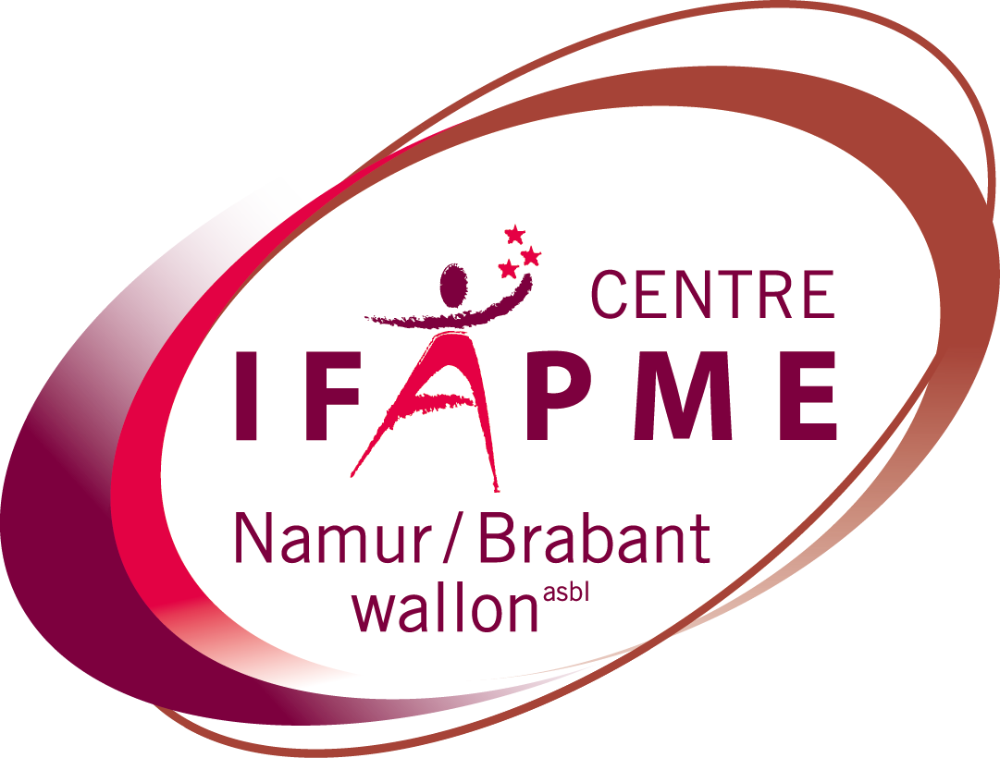
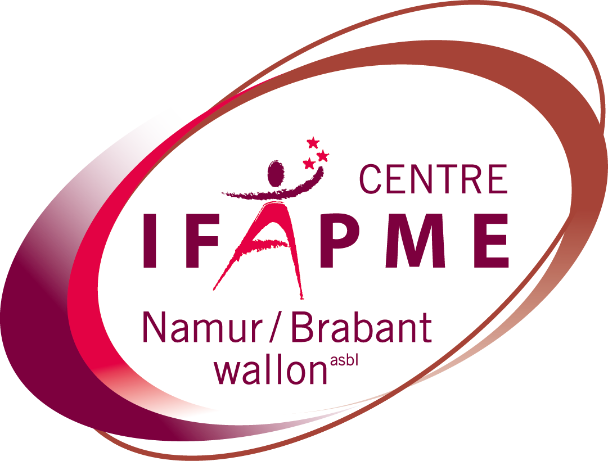

Bonjour, je m'appelle Stan 👋
Apprenti dev web
Je suis actuellement à la recherche d'un stage dans le cadre de ma formation à l'IFAPME.
Apprenti dev web
Je suis actuellement à la recherche d'un stage dans le cadre de ma formation à l'IFAPME.
Bonjour, je m'appelle Stan. Je suis un jeune de 20 ans, actuellement engagé dans une formation en développement web à l'IFAPME. Ma passion pour le monde de la programmation et du développement web m'a conduit à suivre cette voie, et je suis activement à la recherche d'un stage pour mettre en pratique mes connaissances et enrichir mon expérience professionnelle.
Je me suis lancé dans le développement web il y a environ 6 mois, et depuis lors, j'ai plongé profondément dans cet univers captivant. Chaque jour, je m'efforce d'apprendre de nouvelles technologies, d'explorer des concepts innovants et de relever des défis qui me permettent de grandir en tant que développeur.
Quand je ne suis pas en train de coder, je lis énormément de mangas. Ils m'inspirent énormément et stimulent ma créativité.
Hire meJe suis des cours de php, html/css, wordpress et sql avec l'IFAPME. J'apprends le javascript en autodidacte
HTML
CSS
JS
PHP